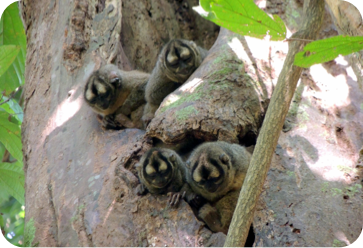

<article>
    <div class="Rectangle-Copy-2">
        <h1 class="Conoce-las-especies">Conoce las especies</h1>
        <h5 class="En-nuestra-asociaci">En nuestra asociación disponemos de un interesante y atractivo material para que
            conozcas a detalle las
            especies y su estado actual en el país.
        </h5>
        <p></p>
        <div id="relatedContent">
            <div style="margin-left: 100px;margin-right: 100px;">
                <ul style="display: flex;">
                    <span>
                        <li style="list-style:none">
                            <p></p>
                            <h1 class="title">ATLAS DE PRIMATES COLOMBIANOS</h1>
                            <p></p>
                            <h5 class="details-1">
                                Conoce un breve pero sustancioso informe de cada una de las especies que habitan en el
                                país : Donde viven, su rango de distribución, estado de vulnerabilidad actual y mucho
                                más!
                            </h5>
                            <span>
                                
                            </span>
                    </span>
                    <span>
                        <li style="list-style:none">
                        </li>
                        <p></p>
                        <h1 class="title">MODELOS DE DISTRIBUCIÓN </h1>
                        <p></p>
                        <h5 class="details-2">
                            Conoce todo sobre el más importante esfuerzo colaborativo para mejorar y fortalecer el
                            conocimiento sobre la distribución geográfica de las especies de primates presentes en
                            Colombia.
                        </h5>

                        <span>
                            
                        </span>
                    </span>
                    <span>
                        <li style="list-style:none">
                        </li>
                        <p></p>
                        <h1 class="title">PRIMATES EN VIA DE EXTINCIÓN</h1>
                        <p></p>
                        <h5 class="details-3">
                            At vero eos et accusamus et iusto odio dignissimos ducimus qui blanditiis praesentium
                            voluptatum deleniti atque corrupti quos dolores.
                        </h5>

                        <span>
                            
                        </span>
                    </span>
                </ul>
            </div>

        </div>
    </div>
</article>